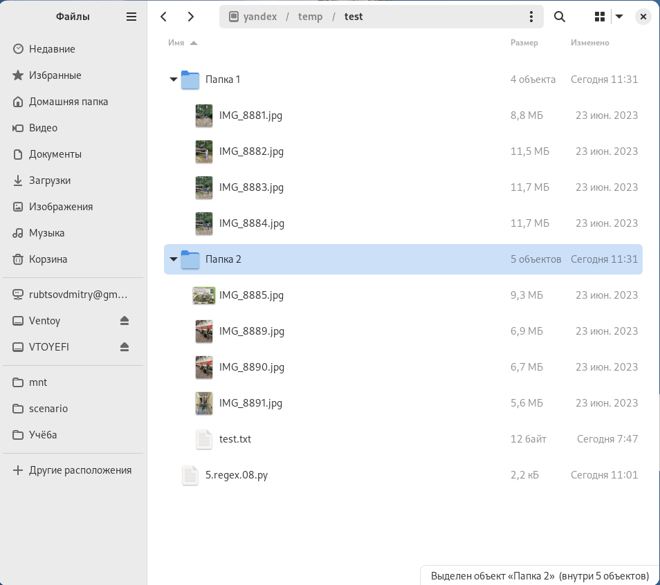
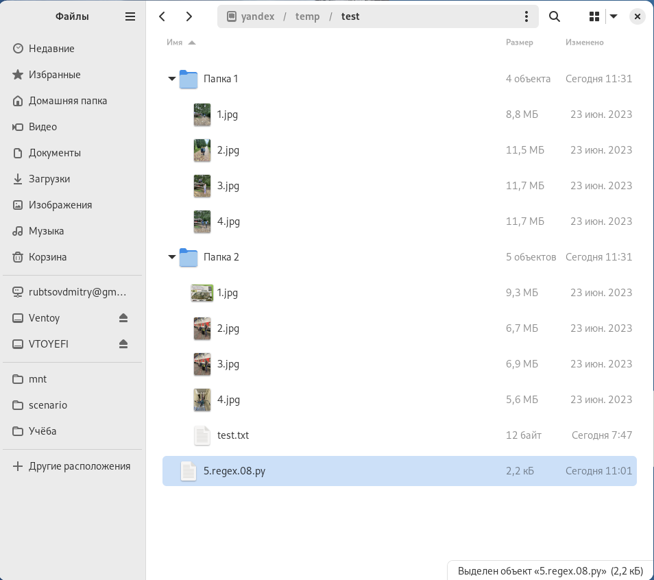

8. Переименование файлов по шаблону.
Условие:
Нужно переименовать файлы в текущем каталоге и во всех вложенных по шаблону. Т.е. найдём все файлы с расширением jpg вида: IMG_8885.jpg ... Переименуем их в 1.jpg, 2.jpg ... n.jpg.
Другие файлы должны остаться без изменений.
Пример:
До обработки:

После обработки:

Код:
import os, pathlib, re, shutil
a = pathlib.Path.cwd() # объект путь, текущее расположение в ФС
regex_obj = re.compile(r"\D{3}_\d{1,5}\.jpg") # пример шаблона: IMG_8885.jpg
"""цикл с функцией os.walk(), который обходит все каталоги и файлы и даже вложенные"""
for foldername, subfoldeers, filenames in os.walk(a):
temp = []
for i in filenames: # для каждого каталога корневого и вложенного свой список файлов, обойдем его в цикле
b = regex_obj.search(i) # сравним файл в списке с выражением REGEX (ищем файла по шаблону)
if type(b) == re.Match: # обрабатываем только подходящие файлы
temp.append(i) # добавляем во временный список подходящие файлы
for a, b in zip(temp, range(1, len(temp) + 1)):
original = foldername + "/" + a # в переменной хранится полный путь к файлу который нужно переименовать
clone = foldername + "/" + str(b) + ".jpg" # в переменной хранится полный путь к файлу который должен получиться
original = pathlib.Path(original)
clone = pathlib.Path(clone)
shutil.move(original, clone)